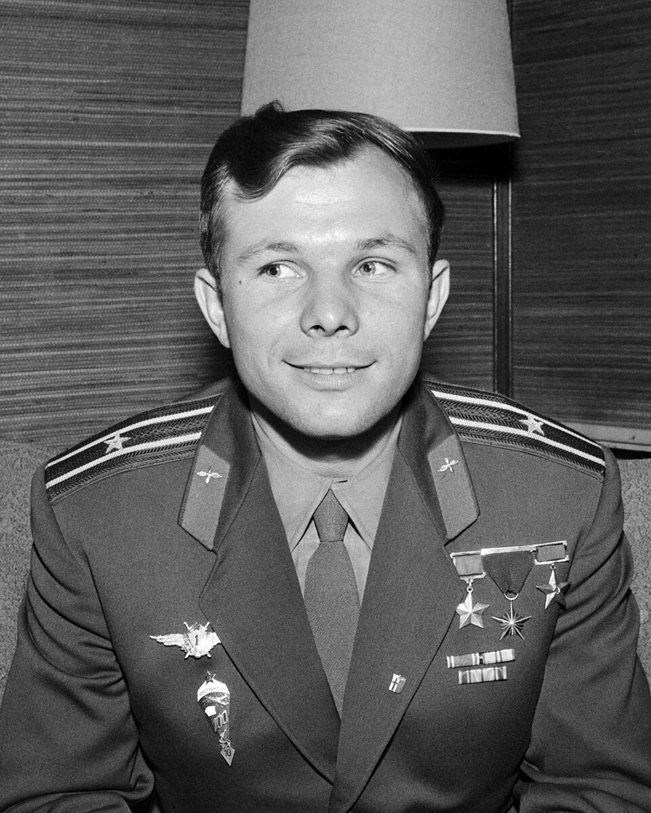

La carrera espacial
La rivalidad entre la Unión Soviética y Estados Unidos que llevó al primer satélite, al primer ser humano en el espacio y, al final, a la Luna.


Tras la Segunda Guerra Mundial, la Unión Soviética y Estados Unidos se disputaban la supremacía en todo, y el espacio se convirtió en el gran escaparate. Los cohetes que podían poner un satélite en órbita también podían llevar una bomba al otro lado del mundo, así que la carrera era tanto científica como militar.
Sputnik: el pitido que cambió el mundo
El 4 de octubre de 1957, la URSS lanzó el Sputnik 1, una esfera de aluminio de 58 cm y 83 kg con cuatro antenas. Solo emitía un «bip-bip» por radio, pero cualquier radioaficionado del mundo podía escucharlo. En Estados Unidos causó auténtico pánico. Un mes después, el Sputnik 2 llevó a la perra Laika, el primer animal en órbita, que murió a las pocas horas por el calor.
Los primeros seres humanos
| Fecha | Hito |
|---|---|
| 12 de abril de 1961 | Yuri Gagarin (URSS) da una vuelta a la Tierra en 108 minutos |
| 5 de mayo de 1961 | Alan Shepard, primer estadounidense en el espacio (vuelo de 15 minutos) |
| 20 de febrero de 1962 | John Glenn, primer estadounidense en órbita |
| 16 de junio de 1963 | Valentina Tereshkova, primera mujer en el espacio |
| 18 de marzo de 1965 | Alexéi Leónov hace el primer paseo espacial |
| 1965-1966 | Las misiones Gemini ensayan acoplamientos y largas estancias |

_-_Restoration.jpg){kind=link}
Los cerebros en la sombra
Detrás del programa soviético estaba Serguéi Koroliov, el «diseñador jefe», cuyo nombre fue secreto de Estado hasta su muerte en 1966. En el lado estadounidense destacaba Wernher von Braun, el ingeniero alemán que había diseñado los cohetes V2 para los nazis y que acabó creando el gigantesco Saturno V. Y muchos cálculos de trayectorias los hicieron a mano matemáticas como Katherine Johnson, a quien John Glenn pidió personalmente que revisara las cifras del ordenador antes de su vuelo.


La Luna como meta
En 1961, tras el vuelo de Gagarin, el presidente John F. Kennedy anunció que Estados Unidos llevaría un hombre a la Luna antes del final de la década. Lo consiguió con el programa Apolo en 1969. La URSS desarrolló en secreto su propio cohete lunar, el N1, pero los cuatro lanzamientos fracasaron.
De rivales a socios
En 1975, una nave Apolo y una Soyuz se acoplaron en órbita y sus tripulantes se dieron la mano: fue el fin simbólico de la carrera. Hoy rusos y estadounidenses conviven en la Estación Espacial Internacional.
Vídeos para entenderlo mejor
- ¿Qué hay detrás de la nueva carrera espacial hacia la Luna? | BBC MundoBBC News Mundo
- La Verdaderos pioneros del Espacio fueron los Rusos [Top 10 Misiones Espaciales Soviéticas]Astrum Español
Los vídeos son de YouTube y de sus autores. Se cargan solo al pulsar sobre ellos. Ver todos los vídeos →